Что такое Офф-Роуд
Офф-роуд (англ. off-road — бездорожье) — вид активного отдыха и спорта, подразумевающий преодоление бездорожья на полноприводном автомобиле, именуемом также внедорожник. Соревнования на X Сибирском автомотофестивале имени Игоря Куликова (2014) Экипаж внедорожника состоит из, как минимум, двух человек: пилота и штурмана. Штурман занимается навигацией, определяет маршрут, руководит действиями пилота во время прохождения бездорожья. Пилот ведёт машину и должен обладать хорошими навыками внедорожного и экстремального вождения. Офф-роуд мероприятия можно разделить на две категории: спорт и активный отдых. К офф-роуд мероприятиям активного отдыха относят внедорожные экспедиции, рейды, фестивали. К спортивным мероприятиям — чемпионаты, трофи-рейды, ралли-рейды.
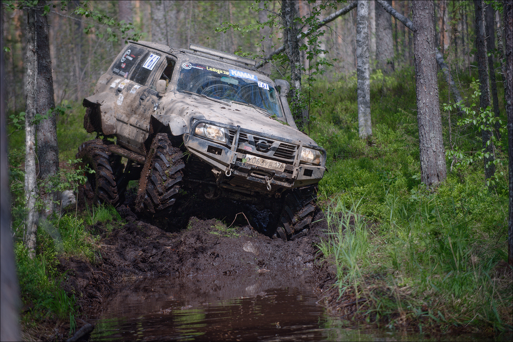
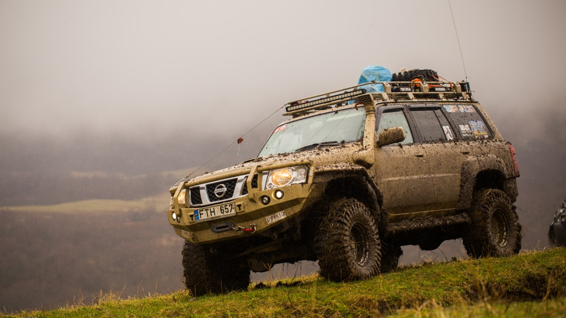
Джипинг (англ. Jeeping) — экстремальный вид отдыха и туризма, заключающийся в прохождении туристических маршрутов по бездорожью на автомобилях (джипах и вездеходах). В России данный вид развлечения для туристов получил распространение как правило в горных местностях, активно посещаемых туристами: в Адыгее (в частности в Майкопском районе), Алтае, а также на черноморском побережье Краснодарского края и Крыма. В 2009 году департамент комплексного развития курортов и туризма Краснодарского края выходил с предложением на законодательном уровне урегулировать развитие джипинга.
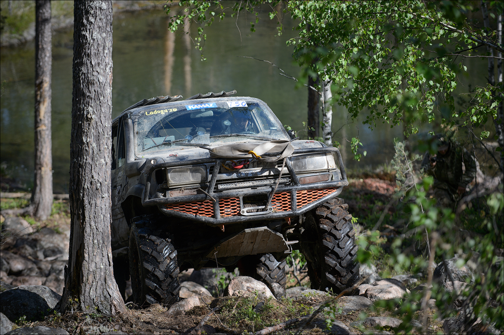
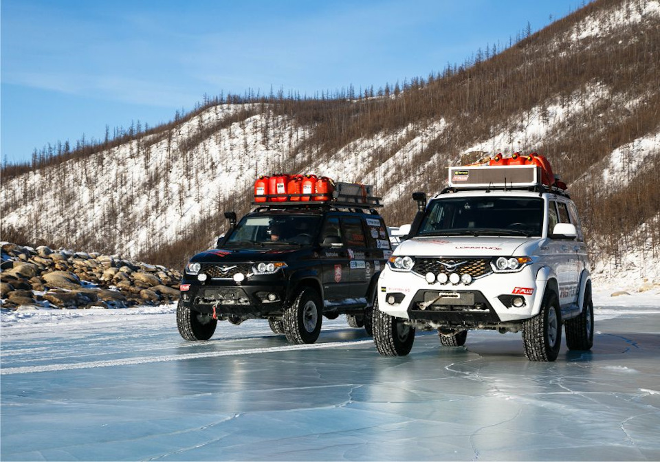
Джиппинг – это увлечение для настоящих мужчин. В жизни настоящих мужчин подход ко времени рациональный – всему свой час. Когда за окном непогода, большинство людей ноют и стонут от плохого настроения. Когда на улице жара большинство стремится к воде, на пляж. Но это не о тех немногих, которым горный ветер и рев мотора дороже шума ласкового морского прибоя и мягкого продавленного дивана. Внедорожник в горах Кавказа, труднопроходимые местности, горные бурные реки и водопады, прекрасные виды побережья – это разрозненные картинки естественной жизни, влекущей, вдохновляющей, дарящей бодрость и адреналин. Такой стиль жизни по карману только настоящим мужчинам. Вообще-то джиппинг представляет собой увлекательное путешествие с преодолением природных препятствий на автомобилях повышенной проходимости. Те, кто легок на подъем и отважен, становятся за время путешествия сплоченной командой, готовой к любым дорогам и любым трудностям. Необычное восхождение на гору на полноприводном автомобиле дает возможность ощутить всю мощь верного «железного коня». Влечет необузданные души туда, где высокие скальные берега поросли реликтовой растительностью, туда, где в ущелье царит загадочная атмосфера, а зажатая в каменные тиски горная глубокая река стала бело-голубой. В любое время года можно найти такие красивые места. Любой активный вид отдыха подразумевает особую форму одежды. Для джиппинга одежда подбирается с учетом времени года и климатических условий - это головной убор, ветрозащитная куртка, спортивная обувь, солнцезащитные очки. Экстремальный вид спорта тоже называется джиппингом. Замечательно то, что интерес к джиппингу, его популярность стремительно растёт. Те, кто легок на подъем и отважен, становятся за время путешествия сплоченной командой, готовой к любым дорогам и любым трудностям. С каждым годом к автопробегу присоединяются новые экипажи, в которые входят профессионалы и просто любители трофи-рейдов из разных городов и районов страны. При каждом заезде перед участниками состязаний открывается множество необыкновенно красивых панорам, придающих сил и стремления двигаться вперёд для освоения новых живописных окрестностей. Пройти трассу вслепую, с завязанными глазами по указаниям штурмана - можно назвать сумасшествием такой заезд. Только отчаянный джиппер, увлеченный и стремительный способен на такое. Особое состояние азарта, драйва, экстрима движет участниками джиппинга. Уставшие физически, но бодрые эмоционально прибывают мужчины на место отдыха. Долго гудят оживленные беседы, всплывают яркие воспоминания с различных пройденных трофи-рейдов, обсуждается техника новых предстоящих состязаний. Если и вам предстоит заняться джипингом, то следует серьезно отнестись к выбору автомобиля. Многие для этого покупают отечественные уазики, а кто-то предпочитает импортные «проходимцы». Но однозначно, в таком автомобиле должны быть полный привод, понижающая передача и наличие блокировок дифференциалов. Если же вам придется совсем не часто совершать вылазки на природу, то можно приобрести один из корейских автомобилей. По сути джиппинг представляет собой экстремальный вид спорта и экстремальный вид отдыха, соединивший в себе прохождение туристического маршрута или соревнования по недоступным местам, по бездорожью, на автомобилях повышенной проходимости.
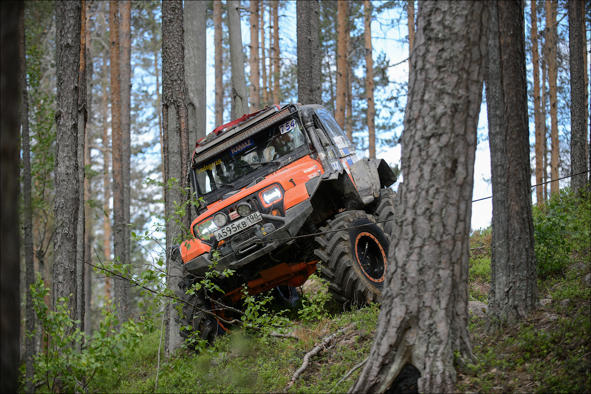
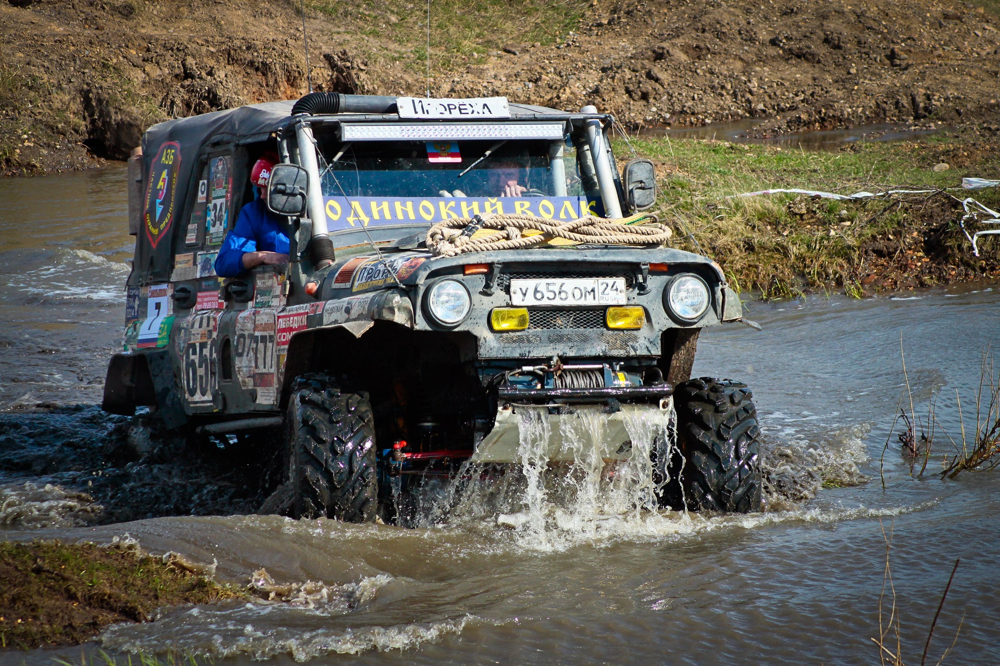
Офф-роуд — Что это такое? Off-road как вид спорта и активного отдыха
Если вашим автомобилем является внедорожник отечественной или иностранной марки, то вы можете не просто ездить по любой местности, не бояться самых смелых ситуаций на дорожном пространстве, «выглядеть» эффектно на дороге и т.п., но и испытывать свой автомобиль, его возможности, получая при этом колоссальное удовольствие и адреналин. Существует некий вид активного отдыха и спорта, который подразумевает преодоление различного рода препятствий по бездорожью на внедорожнике. Называется это экстремальное увлечение автолюбителей офф–роудом. В нем вы можете испытать на прочность как свой автомобиль, так и себя самого, ведь и он и вы должны уметь справляться с тем, с чем хотите столкнуться, если собираетесь участвовать в мероприятии. В переводе с английского слово «офф–роуд» означает «бездорожье». Собственно, можно даже догадаться, что его родиной является не Россия. Разумеется, такое обширное явление не может иметь к акую–то очень узкую направленность. В нем учувствуют внедорожники самых разных марок, комплектаций, годов выпуска, мощности и т.д. Также водители желают преодолевать препятствия разного рода, скорости и маневрирования. Учитывая все это, офф–роуд решили разделить на несколько видов. Ниже мы их представим.
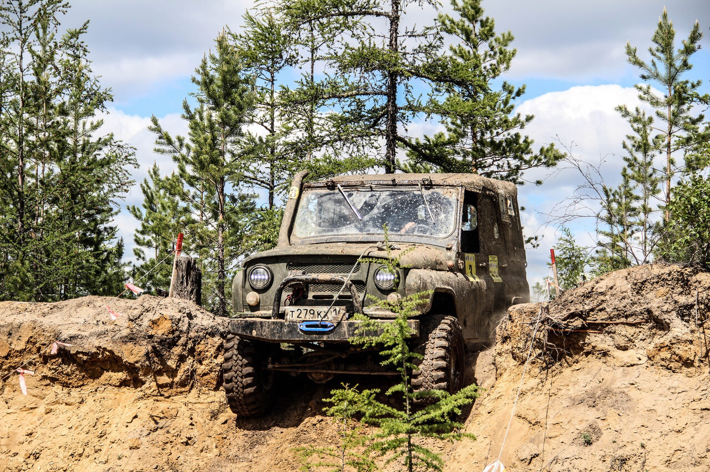
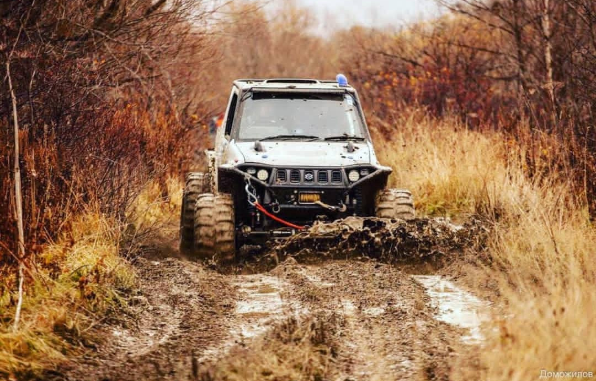
Джип-спринт
В джип–спринте вы будете соревноваться со скоростью, временем и с самим собой. Если вы вовремя не заметили препятствие, то можете попрощаться со свои глушителем; не рассчитали собственные силы – ваш ждет занос; вовремя не притормозили перед барьером – готовьте запасное колесо. Джип–спринт проходит, как правило, по ухабистым лесным дорогам и долгим плавным поворотам. Очень эффектно выступают здесь брызги луж и различные водные преграды, которые летят во все стороны, полностью опрыскивая машину, Для этого экстрима обычные стеклоочистители не подойдут. На финише вас будет ждать контрольный пункт, где вас отметят в дорожной карте, также ощущение полного изнеможения, только сладостное и счастливое. Вы приобретете бесценный опыт и воспоминания на всю жизнь.
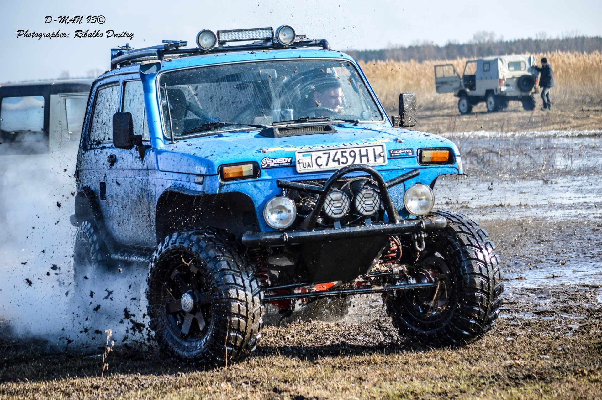
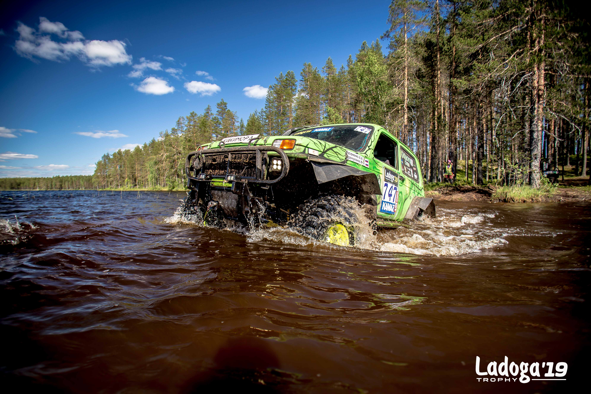
Ориентирование
Ориентирование – это классический вид соревнований офф–роуда. Здесь все основывается на вашем взаимодействии со штурманом. От него зависит очень многое: свернет ли пилот правильно или проскочит мимо нужного поворота и запутается. Здесь важно уметь правильно ориентироваться на местности, уметь «читать» карту и владеть штурманским оборудованием. Как и любой другой вид офф–роуда, ориентирование делится на уровни. Есть уровень для новичков, для любителей и для тех, кто любит «пожестче». Для последних (они именуются «монстрами») обязательно наличие GPS. На этом уровне не выдается карта, как в «стандарте» — вместо нее дают координаты всех точек, которые нужно объехать любым путем: по дорогам или через лесную зону. Запрещается валить лес бамперами, что внедорожник может позволить себе сделать.
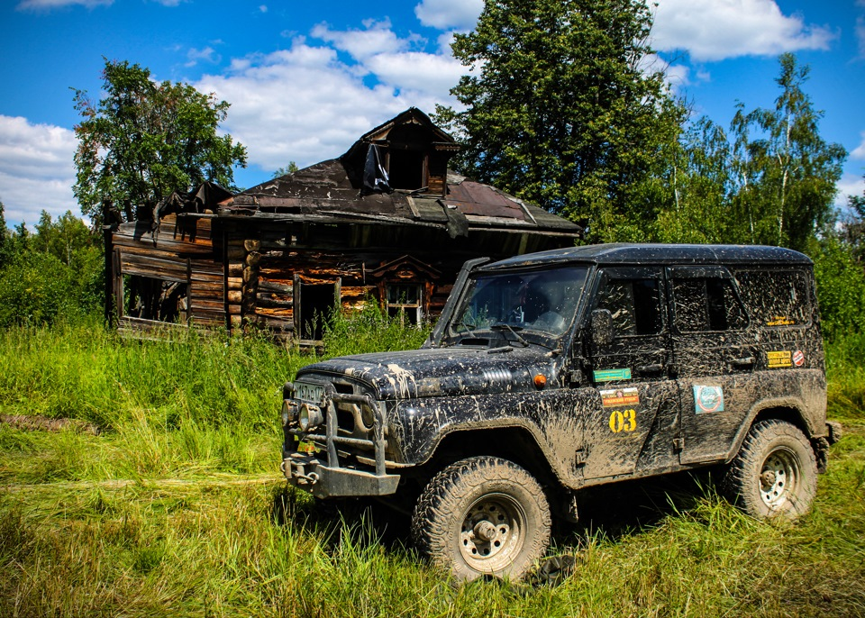
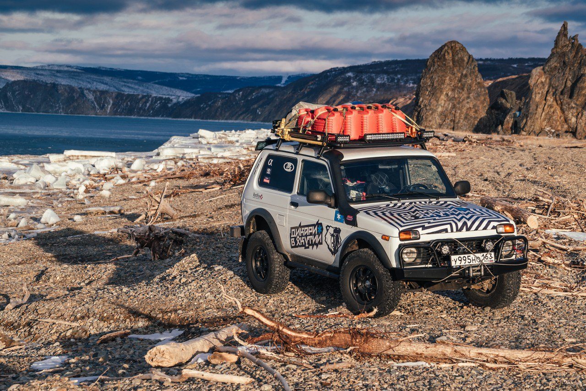
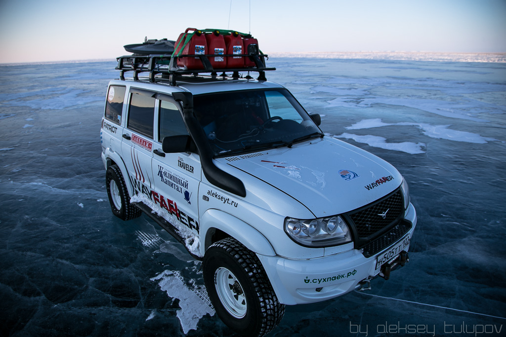
Триал
Триал считается самым зрелищным и сложным соревнованием. Подготавливать автомобиль следует колоссально: машина должна быть оснащена длинными ходами подвески, навесное оборудование должно отсутствовать или его может быть очень мало; необходимо «оттюнинговать» блокировку и двигатель – все это тот минимум, который необходимо осуществить со своей боевой машиной экстрим–водителю. Сама трасса включает в себя природные и рукотворные препятствия: изломы скал, огромные коренья, необтесанные бревна, горки с подъемами и каньонами, отвесные подъемы и т.д. Если смотреть на трассу со стороны, то она имеет вид непроходимого лабиринта, который, кажется, невозможно преодолеть. Задача совсем непростая: пройти весь этот запутанный лабиринт на внедорожнике, учитывая время и скорость движения. Вас будут ожидать узкие ворота из покрышек; нельзя зацепить ленты, показывающие направление маршрута. На этом испытании нельзя выходить из автомобиля. Также за каждый ваш «косяк», будь то сбитый столбик, непрохождение какого–либо препятствия или задевание лент, вы будете наказаны штрафным временем и пенализацией.
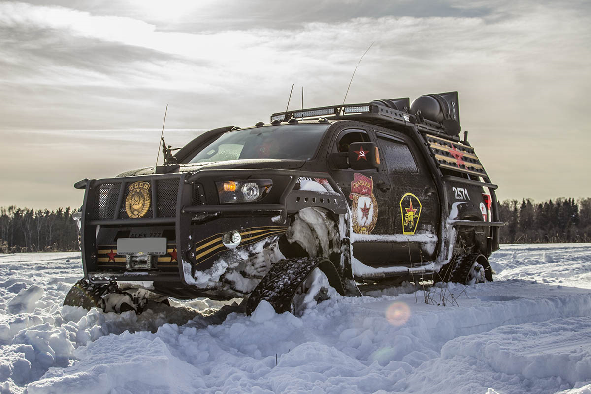
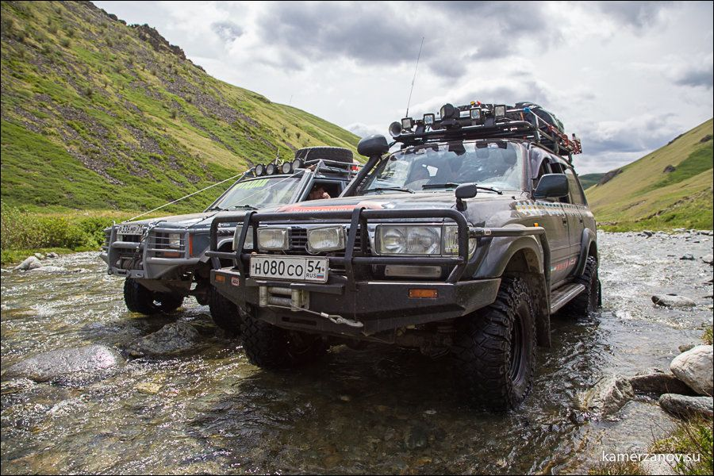
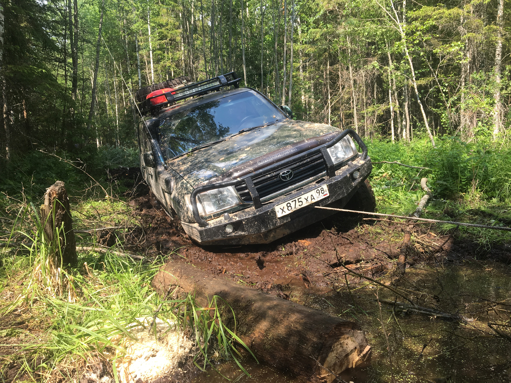
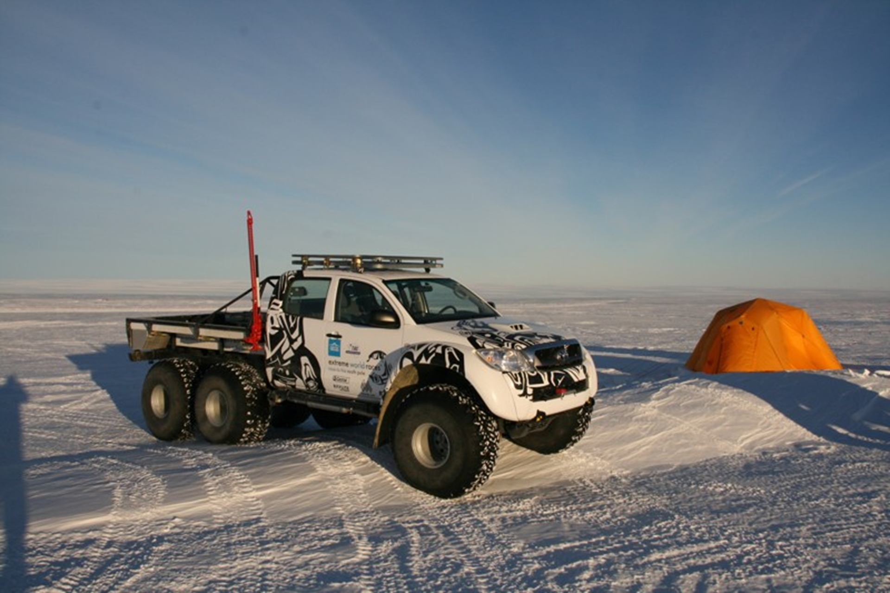
Трофи-рейд
Трофи–рейд «тестирует» вас и ваш автомобиль на выносливость. Главным атрибутом соревнования является вязкая непролазная грязь. Все будет таким, как после дождя: колеи с водой, свежая мокрая пашня, речки с неровным обрывистым берегом, глубокие тягучие лужи с илом и корягами. Испытания могут повредить различные части машины: вырвать с корнем амортизаторы, «убить» в воде лебедки, погнуть трансмиссию и рулевые тяги. Стоит вам немного остановиться, как вы увидите новый несущийся за вами внедорожник, облитый грязью и устремляющийся в воду. Если машина или ее части не выдержали некоторых испытаний, и вы «заглохли», то нужно ждать помощи от следом идущих за вами водителей. Практика показывает, что все помогают друг другу, несмотря на условное соперничество.
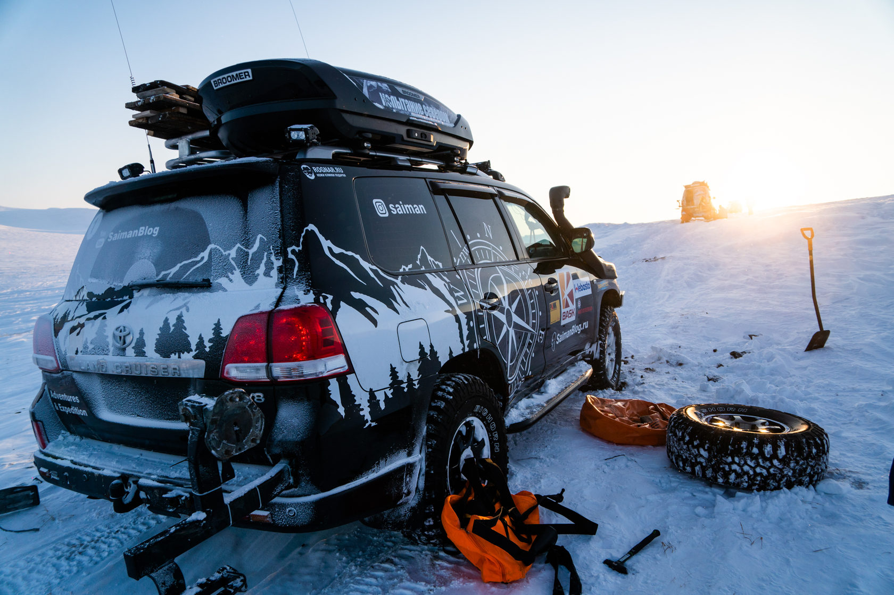
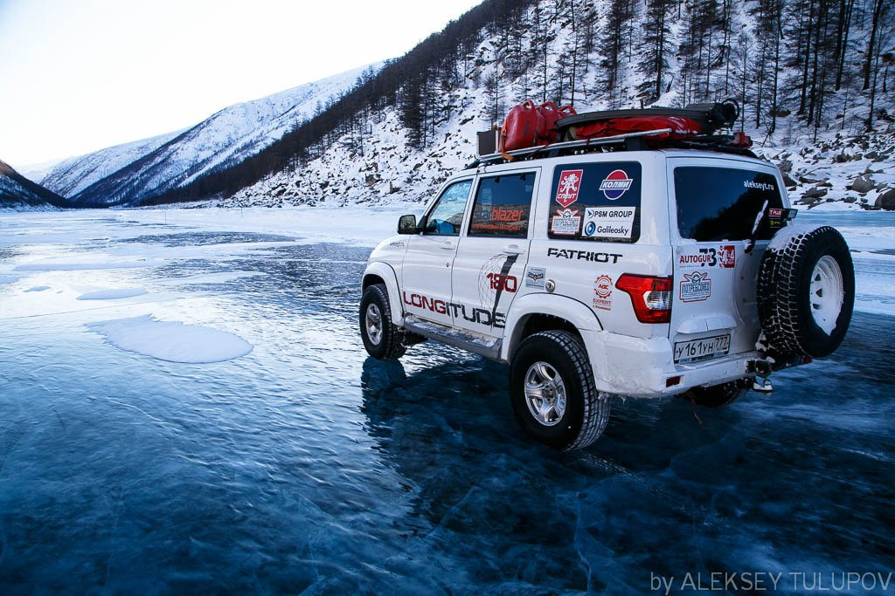
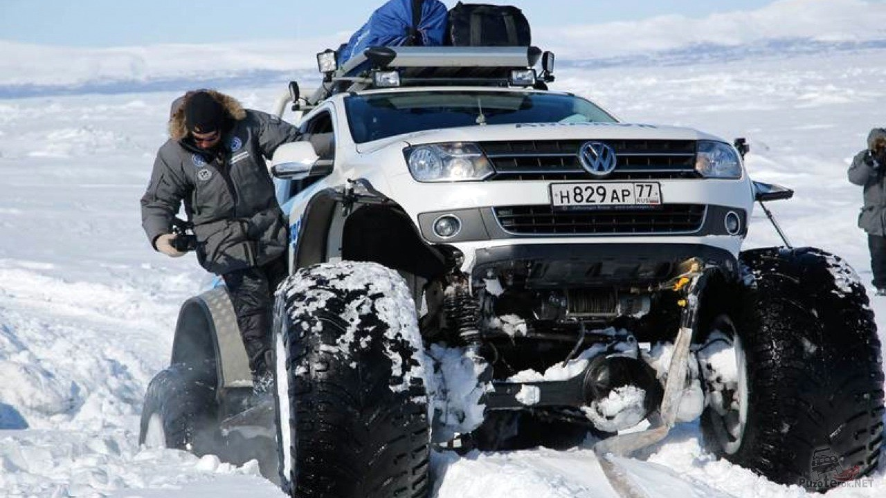
Снаряжение для оффроуда, советы для новичков
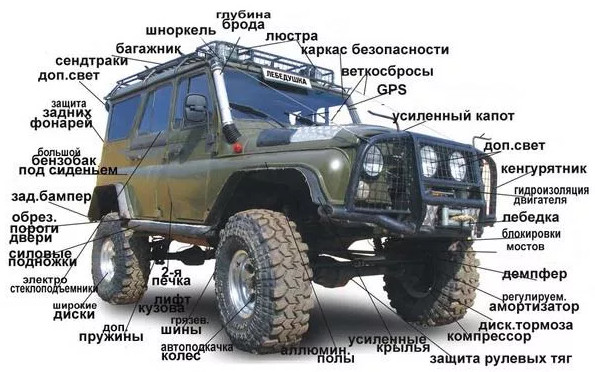
Вопрос свободного времяпрепровождения каждый решает по-своему: кто-то не мыслит своей жизни без рыбалки, кто-то все выходные проводит на полях для пейнтбола, а кто-то, оседлав своего мощного железного коня, едет туда, где и пройти-то не всегда можно. И владельцы джипов считают, что именно офф-роуд, езда на автомобиле по бездорожью, помогает вылечиться от стресса, почувствовать единение с природой.
Характеристики автомобиля Первое, что нужно сделать перед тем, как заняться офф-роудом – это выбрать автомобиль. Но ориентировать свой выбор нужно не на модель автомобиля, а на его характеристики: Проходимость Эта характеристика имеет несколько слагаемых: вес – чем автомобиль легче, тем на ней проще преодолевать препятствия; клиренс (дорожный просвет) – чем он больше, тем лучше; подвеска должна быть зависимой – она обладает большой артикуляцией и позволяет машине уверенно преодолевать рельефные участки дороги;
Мощность двигателя – мощный мотор лучше ведет себя на низких оборотах. И, конечно же, хорошая грязевая резина – без нее съезжать с асфальта просто нет смысла.
Двигатель
Однозначного ответа – бензин или дизель – нет. Каждый выбирает для себя. Можно только отметить, что дизель мощнее, более экономичен и обладает мощным моторесурсом. Его на стоянке можно даже не глушить – работать дизель может очень долго. Но бензиновый двигатель дешевле – как в покупке, так и в ремонте. К тому же, он легче за своего собрата, а иногда каждый килограмм имеет значение.
Рама
Машина должна иметь раму, а не несущий кузов. Кузов не сможет выдержать всех тех нагрузок, с которыми часто придется сталкиваться внедорожнику. К тому же, рамный автомобиль проще переделать под вездеход. Но перед покупкой все-таки неплохо было бы узнать – поддается ли тот или иной джип переделке под внедорожник (в прямом значении этого слова).
Если удастся все же найти автомобиль, который идеально подходит по всем характеристикам, то это не значит, что на нем можно отправляться в густой лес. Теперь машину нужно правильно подготовить.
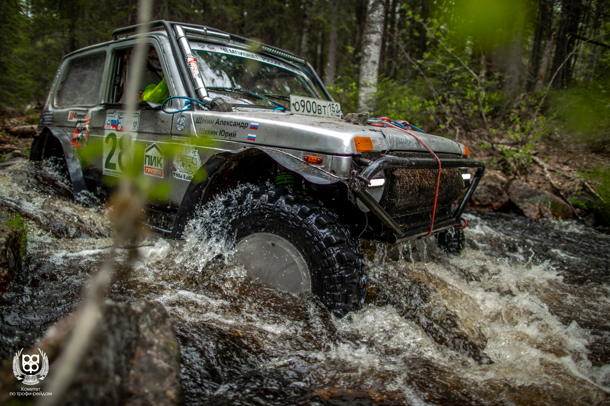
Подготовка машины для офф-роуда
Наличие огромных шин и хромированного кенгурина еще не повод для поездки в офф-роуд. Машину нужно подготовить: отлифтовать, надежно герметизировать, установить лебедку и шноркель. Лифтинг. Основной задачей лифтинга является увеличение клиренса – подъем автомобиля над землей. Существует несколько способов лифтования.
Дорожный просвет
Самый простой — это подъем кузова над рамой. Под все крепежные болты подкладываются специальные подставки, и машина вырастает просто на глазах. Можно также отлифтовать подвеску, применив более длинные серьги рессор или удлинение штока амортизаторов (для автомобилей с пружинной подвеской). После лифтинга обязательно нужно посмотреть, хватает ли длины валов кардана, как ведут себя тяги рулевого управления, а также проверить натяжение всех шлангов.
Герметизация
Для преодоления неглубоких луж и ручьев обычно стандартной герметизации бывает достаточно. Но вот если вода доходит до крыши, тем более, если приходится еще и стоять в этой воде (заглох, застрял), то тут уж нужно законопачивать все щели и недоделки производителя.
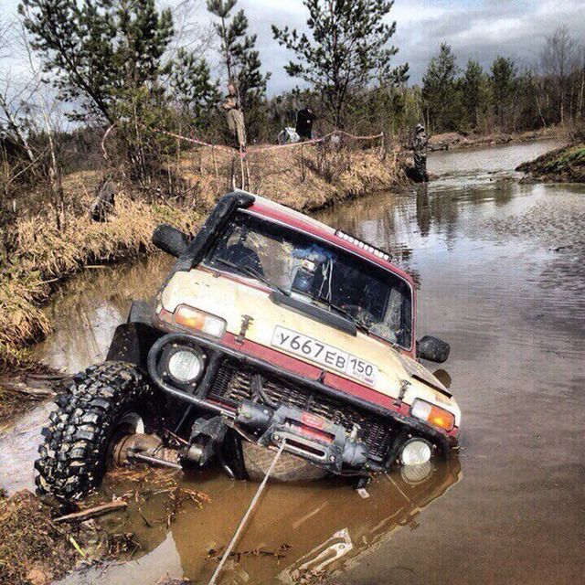